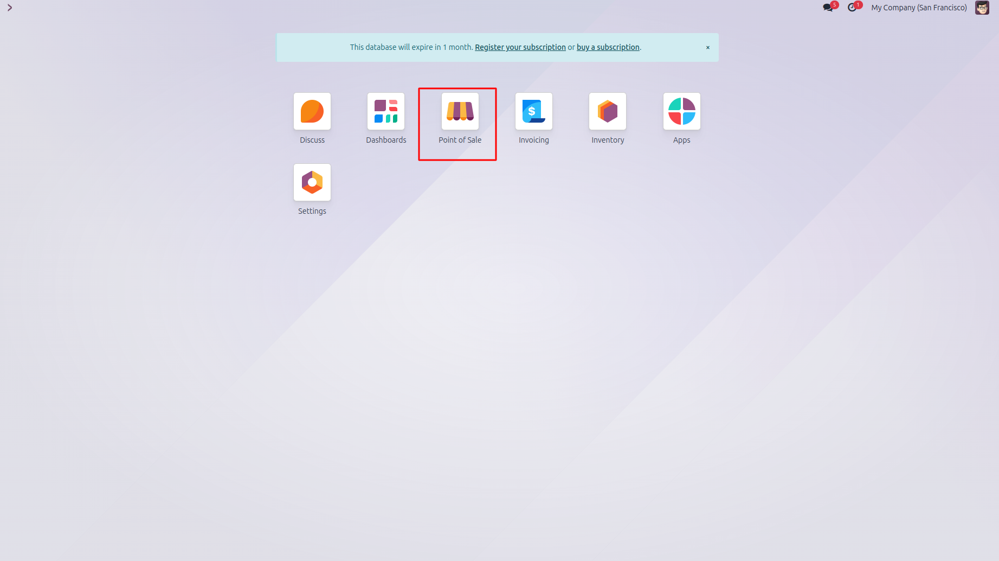
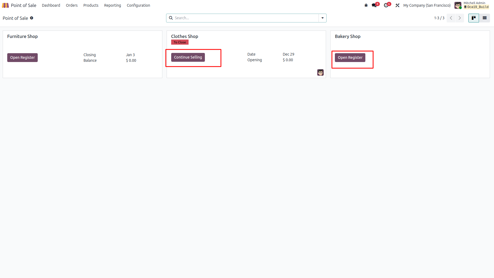
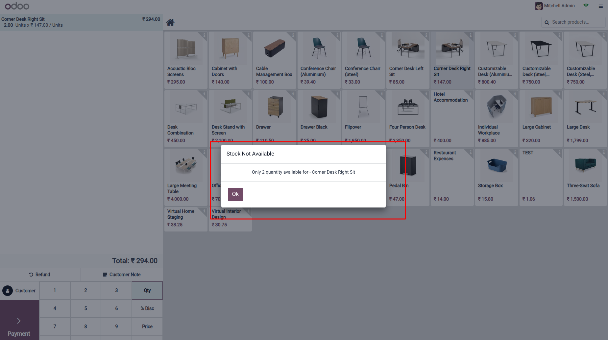
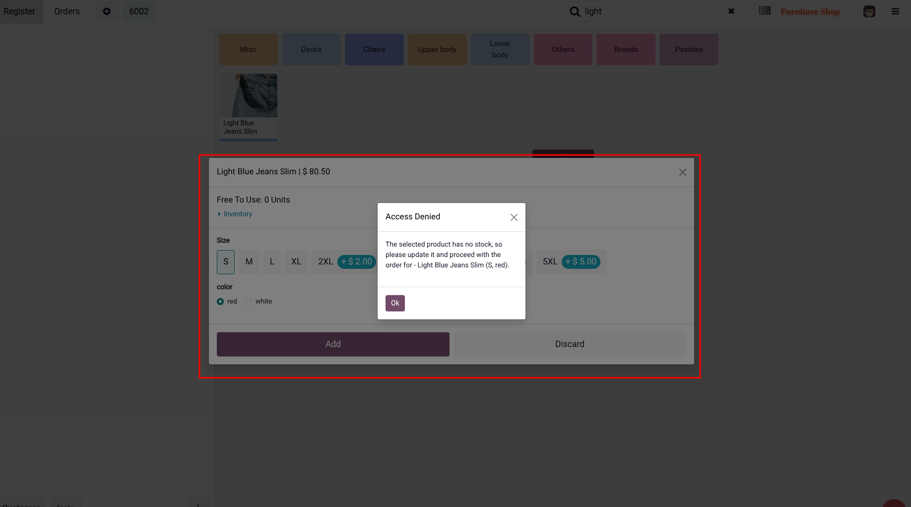
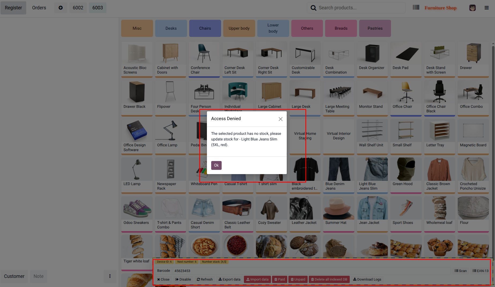

Prevent negative inventory in Point of Sale with real-time, location-based stock validation.
Compatible with Odoo V19


The system checks available stock in real time and prevents adding products when the available quantity is zero. This validation applies to products without variants directly from the POS screen.

For products with variants, the system validates stock based on the selected variant inside the variant popup. If the selected variant has insufficient stock, a warning is displayed when clicking the Add button.

When products are scanned using a barcode, the system performs instant location-based stock validation. If stock is insufficient, the product will not be added and a warning popup will be displayed.
